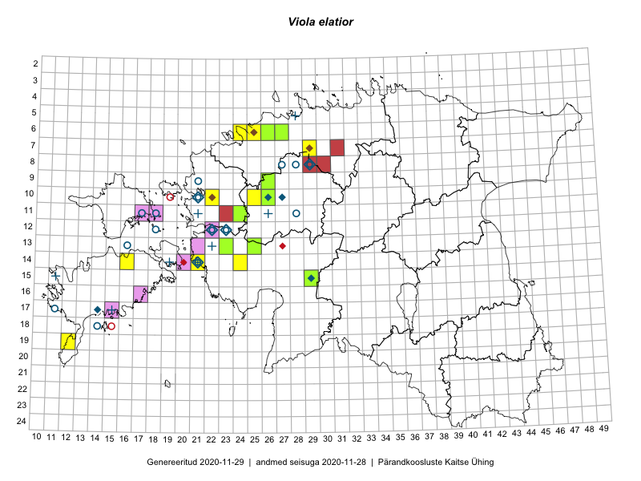

Viola elatior
Uuendatud: 2016-12-01
Kaardile koondatud taksonid: Viola elatior Fr.

Kaart põhineb 20 kirjel, neist vaatlusi 18 ja eksemplare 2.
Viited andmebaasikirjetele
- Meeli Mesipuu, Kadri Tali: 2015-07-06: 16-18: ala
- Ott Luuk, Elle Roosaluste, Jaak-Albert Metsoja: 2015-06-15: 14-16: GPS punkt
- Indrek Tammekänd, Katrin Aavik: 2015-06-15: 13-25: GPS punkt
- Erkki Otsman, Sergei Smirnov: 2015-05-29: 06-24: ala
- Meeli Mesipuu, Liina Oja: 2015-04-26: 06-43: GPS punkt
- Meeli Mesipuu, Liina Oja: 2015-04-26: 06-43: GPS punkt
- Erkki Otsman, Sergei Smirnov: 2015-05-29: 06-24: GPS punkt
- Erkki Otsman, Sergei Smirnov: 2015-05-29: 06-24: GPS punkt
- Peedu Saar, Kersti Püssa, Rein Kalamees, Toomas Kukk: 2014-06-11: 09-26: ala
- Peedu Saar, Kersti Püssa, Rein Kalamees, Toomas Kukk: 2014-06-11: 09-26: GPS punkt
- Ott Luuk, Jaak-Albert Metsoja, Maret Gerz: 2014-06-11: 10-25: ala
- Jaak-Albert Metsoja, Ott Luuk, Maret Gerz: 2014-06-11: 10-26: ala
- Tõnu Ploompuu: 2015-08-21: 10-22: ala
- Tiit Hallikma, Ott Luuk: 2016-04-27: 21-37: GPS punkt
- Tõnu Ploompuu: 2015-05-20: 10-22: ala
- Thea Kull: 2016-06-21: 14-24: ala
- Thea Kull: 2016-06-21: 14-24: GPS punkt
- Thea Kull: 2016-06-21: 14-24: GPS punkt
- Peedu Saar, Liina Oja: 2015-06-11: 15-29: GPS punkt
- Ott Luuk: 2012-06-12: 11-24: GPS punkt